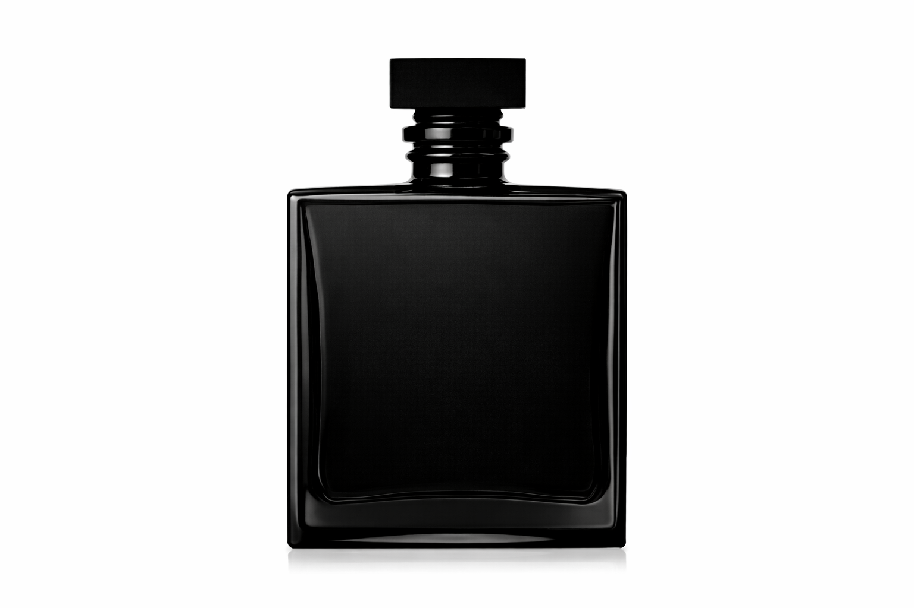
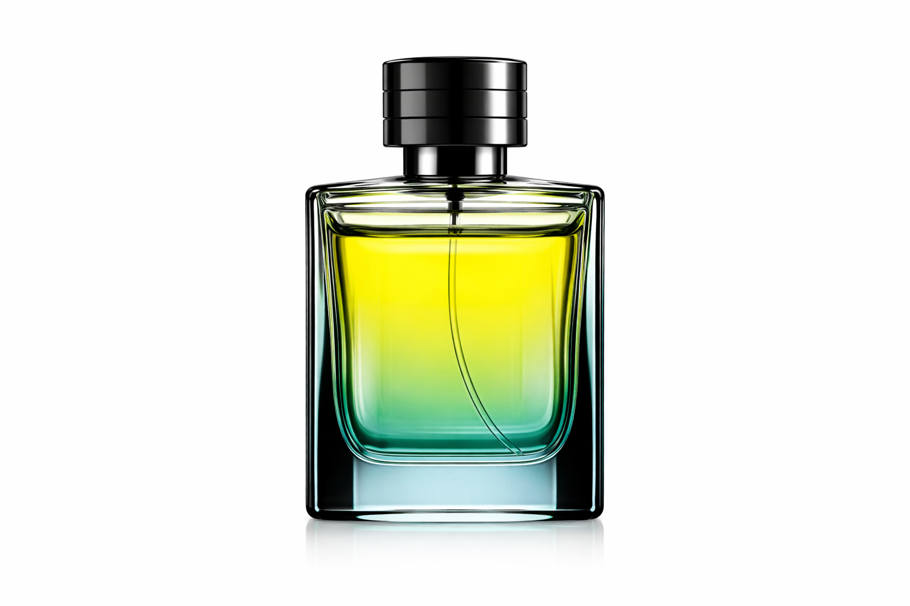
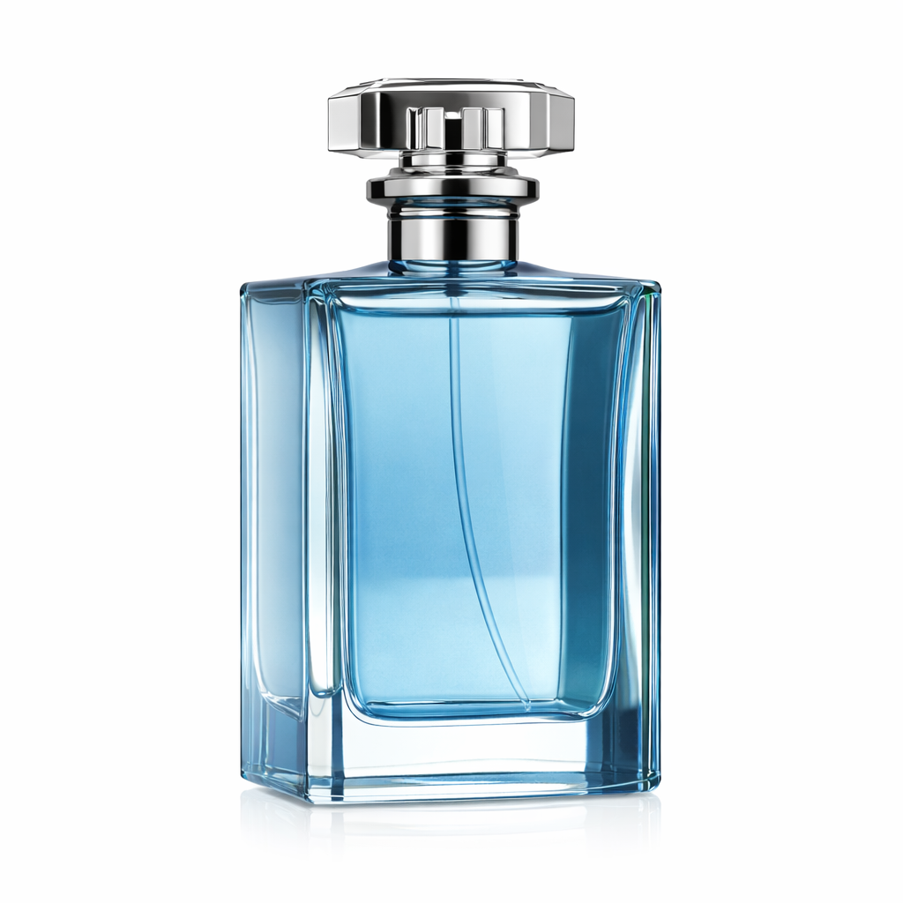

Fragancias masculinas

Iconic men eau de parfum
Estos perfumes tienen una base cálida y terrosa, con notas como cedro, sándalo, vetiver y musgo de roble. Son fragancias elegantes, sofisticadas y muy masculinas, perfectas para un toque de distinción.
- Cedro
- Bergamota
- Pomelo

Sky eau de parfum
Los perfumes dulces para hombre suelen llevar notas como vainilla, tonka, caramelo o incluso café. Son fragancias envolventes, cálidas y muy acogedoras, ideales para ocasiones especiales o noches.
- Mandarina
- Frambuesa
- Vainilla ligera
- Azucar caramelizada

Heroe eau de parfum
Aunque tradicionalmente los perfumes florales se asocian más con mujeres, los de hombre suelen incluir notas como lavanda, jazmín o geranio, pero combinadas con elementos más terrosos o ambarinos. Así se logra un equilibrio fresco y masculino
- Lavanda
- Geranio
- Cedro claro
- Manzana verde